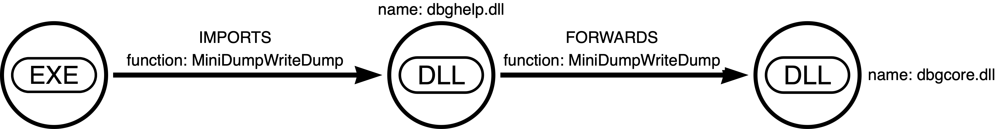
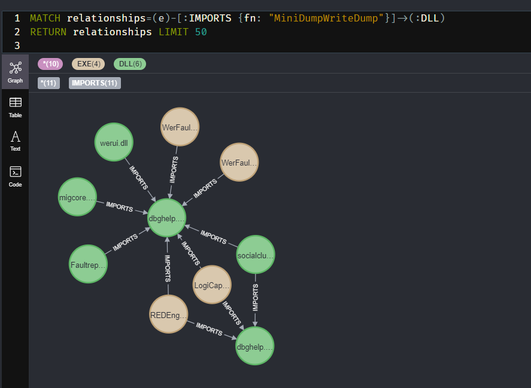
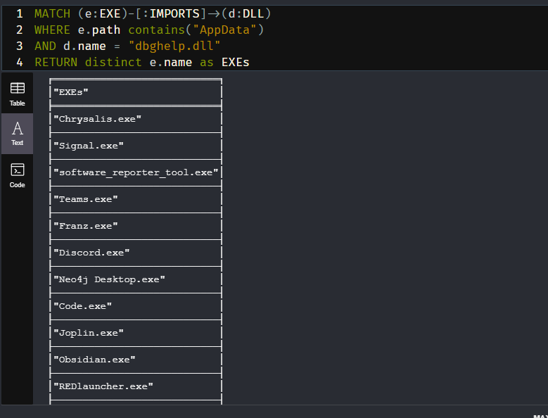
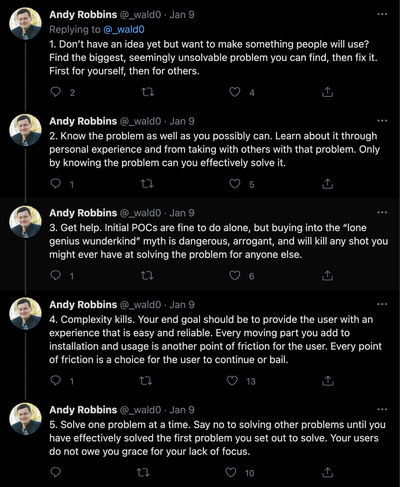

11 minutes
Accidentally Graphing DLL Hijacks in Every Electron App
or Building Your Own Binoculars
I like this bi-line for a couple of reasons.
- It touches on self-sufficiency in the face of necessity
- It could bring up one of two things
- You may be too far from the problem. Think about how to get closer
- You may not be seeing the forest for the trees. Being an expert on something can make it difficult to have an objective/practical opinion about the downstream effects your specialty has on the world around you.
- Building tools to solve a problem reveals perspectives to the problem you did not anticipate
- I recently finished reading “Paddle Your Own Canoe” by Nick Offerman and wanted a cool title like his
In my research, it often takes me a while to get started because I procrastinate spend so much time building tools to facilitate the research. I try to anticipate my needs, and set myself up to easily pivot, if need be. I do my best to ensure a fast feedback loop, allowing fast failures and restarts. Failures are still data. To twist the colloquialism: Sharpen your axe before chopping down trees.
Some time ago, while hashing out what to build into an application, I received some advice that’s helped me in various technical and non-technical aspects of my life:
Don’t anticipate details. Therein lies madness. Instead, only anticipate change, and build what’s needed to facilitate that change.
There’s you daily does of Zen and the Art of Motorcycle Maintenance
Prior Work
Below is a list of related work I encountered throughout the life-cycle of this project. This would have been much more painful without you all. Thank you:
- %appdata% is a mistake: Jean Maes
- Analysing RPC with Ghidra and neo4j: Adam Chester aka @xpn
- Automating DLL Hijack Discovery: Justin Bui aka @slyd0g
- Using Slack, WhatsApp (electron Apps) for malware attack
Initial Threads
I’m not a smart man when it comes to things like Threat Intelligence or Malware Reversing. Hoping to remedy that problem, I picked up Malware Data Science by Joshua Saxe with Hillary Sanders. There’s a section about judging the actions of malware based on the functionality it imports from other dependencies.
I began thinking about collecting that information from known good binaries; what’s the baseline for good?
In a separate mental thread, I had been playing with Google’s project dependency mapper, deps.dev. It’s pretty wild seeing the relationships between all these different OSS projects graphed out in such a visually impactful way. During the Great Left-Pad debacle in the node.js ecosystem, their community caught a lot of snark for its tendency to pull in dependencies for seemingly trivial tasks.
Is-Even, which does exactly what you’re thinking and nothing more, is downloaded 200k times a week
When a developer of a particular package deleted his code from the repository whence node packages are fetched, new attempts to rebuild projects that depended on it would simply fail to build.
A note on Left Pad: If you know what this was, skip ahead. Left-Pad was a node.js package that would take an input, and pad it with whatever you wanted on the left side, as many times as you wanted. If you passed it 1234, and the number 0 for the padding, and the number 8, for the desired total length, it would return 00001234. It turns out some very big projects imported this dependency. Sometimes not even directly! It was an indirect dependency, meaning it was a dependency of a dependency of a dependency… etc. One such project was React.js. All over the world developers ran into failures, CI pipelines failed to deploy, and many hours (and dollars) were lost that day.
Was the snark justified? I mean, how new was this problem of dependency hell? The threads have come together.
Formation of the Project
Since any good experiment begins with a question:
- If we knew all the direct and indirect dependencies on a Windows system:
- Could we find “lolbins” in the form of imported dependencies?
- How quickly could we analyze the blast radius if it became known that a particular dependency had a vulnerability
- In knowing what processes would have what loaded functions by default, could we make those processes do things they wouldn’t normally do and would anyone be able to tell?
Initial Research
In order to collect the data, I needed a way to quickly pull dependencies from all PEs on disk.
PE stands for Portable Executable. Their structure follows a predefined set of rules, or specifications. EXEs and DLLs are both PEs.
I also knew I wanted get a visual representation of these dependencies. My thought was to create something that would allow for the easy ingestion of data into Neo4j, a graph database. You may be familiar with this if you’ve ever used Bloodhound.
Wanting to be able to test a single PE using any OS, and also to have a portable tool I can use on many different versions of fresh Windows installs, I chose Golang and I built ino - https://github.com/audibleblink/ino/tree/v0.0.1
Being new to the PE format, I discovered a few things at this point in my journey:
- PE files can import other PEs, regardless of extension
- EXEs can import DLLs
- DLLs can import DLLs
- DLLs can import EXEs
- EXEs can import EXEs
- Both can export functions
- PE files have Forwards
- A PE can Export a function that it itself does not define
- It’s a form of Export that merely points to a different DLL’s export
To ino, I added the ability to collect Forwards as well. I also added the ability for ino itself to recursively search for PEs, given a starting directory. This brings us to v0.1.2 - https://github.com/audibleblink/ino/tree/v0.1.2
The Data:
Collection of the data:
$ ino.exe -dir c:\ -type dll > dlls.json
Resulting JSON:
ino -v comsvcs.dll
{
"Name": "comsvcs.dll",
"Path": "C:\Windows\system32",
"Imphash": "...",
"Imports": [...],
"Exports": [...],
"Forwards": [...],
"PDB": "...",
"Sections": [...],
}
With the data collected from about 86K PEs on a fresh install of Windows, I moved on to importing to and visualizing with Neo4j.
First Round of Analysis
Neo4j is a graph database that surfaces relationships between pieces of data. You may be familiar with traditional databases that hold mass amounts of information, and yes, can correlate separate tables with Joins. While Neo can hold data for each table row (aka Node in Neo-speak), it’s purpose is to shine a light on the “Joins”. It’s an oversimplification, but if you were unfamiliar with Neo4j before this article, knowing that should get you through the rest of this part.
A lot of it’s power comes from not needing to know any intermediary nodes or attributes to surface relationships. You simply ask it, “What’s the shortest path between Node A and Node B?”. If ever there was a way to find exactly just how many degrees you’re separated from Kevin Bacon, this is it.
The Model:

Fail log: I should have created the model first. The tool influenced how I though about the graph. In retrospect, the Function name should have been its own node. Thanks to some very helpful conversations with Andy Robbins aka @wald0, I learne that anything you want to search by should be a node and not a property on that node or edge. Doing so will increase query time substantially.
Something like this would have been a more useful model:
> (EXE)-[:IMPORTS]-(:FUNCTION)-[:DEFINED_BY]-(DLL)-[:FORWARDS]-(FUNCTION)-[:FORWARDED_TO]->(DLL)
and the ingestion:
CALL apoc.load.json("file:///sys32_dll.json")
YIELD value AS dllData
MERGE (dll:DLL {name: dllData.Name, complete: false})
SET dll.exports = dllData.Exports
SET dll.path = dllData.Path
SET dll.imphash = dllData.ImpHash
SET dll.complete = true
WITH dll, dllData UNWIND dllData.Imports AS import
MERGE (dll1:DLL {name: import.Host})
FOREACH (i in CASE WHEN dll1.complete THEN [] ELSE [1] END |
SET dll1.complete = false)
WITH dll, dll1, import, dllData UNWIND import.Functions as func
MERGE (dll)-[:IMPORTS {fn: func}]->(dll1)
WITH dll, dllData UNWIND dllData.Forwards AS fwd
MERGE (dll3:DLL {name: fwd.Host})
FOREACH (i in CASE WHEN dll3.complete THEN [] ELSE [1] END |
SET dll3.complete = false)
WITH dll, dll3, fwd UNWIND fwd.Functions as func
MERGE (dll)-[:FORWARDS {fn: func}]->(dll3)
The ingestion was intense and took me several hours to build, and this was a relatively simple model. Let’s explain this query a chunk at a time.
apoc.load.json() yeild value as dllDatawill import some JSON, iterate through the lines, giving you access to each as the variabledllDatadllDatais the JSON from a few lines up
MERGE (dll:DLL {...}will attempt to find, and if not found, creates a DLL node with the included propertiescompleteindicates if this DLL has been processed because it was one of the JSON line. I set it to true in 4 lines, because if it’s running through this loop, it is a JSON object- This script adhoc creates other PE nodes when iterating through Imports and Forwards. In that data, the properties
exports, path, imphashare not present- In those cases, somewhere down the line I may run into that actual location of those adhoc nodes. I want to find them, instead of creating new ones
WITH dll, dllData UNWIND dllData.Imports AS import- sets up an iteration theimportsarray, while giving us access to thedll, dllDatavariables.MERGE ()- Find or create this node which is an import of our top-level node. The one we’re currently iterating through from our JSON.FOREACH ...- Neo doesn’t have IF/ELSE conditions, so this little hack uses thecompleteflag to determine whether or not this a complete node or an adhoc one, with incomplete information. If it’s incomplete, we set thefalseflagWITH dll, dll3, fwd UNWIND fwd.Functions as func- another loop to create the relationship between our top-level DLL and the current iteration of theImportsarrayMERGE (dll)-[:IMPORTS {fn: func}]->(dll1)
- The next section repeats this logic, but for Forwards
Fail log: Don’t do this ^. It’s error-prone and slow to seed. Instead focus on creating the nodes. Then as a post-processing step, create the relationships. An example:
CALL apoc.periodic.iterate(
"MATCH (node:%s),(dir:Directory) WHERE node.parent = dir.path RETURN node,dir",
"MERGE (dir)-[:CONTAINS]->(node)",
{batchSize:100, parallel: true, iterateList:true})
Arg 1: find related nodes with a query,
Arg 2: action to take on each returned “row”
Arg 3: go really fast
Visualization
Now we’re getting to the fun part. With all of the nodes and relationships set, we can begin exploring.
Due to some other recent but unrelated work, I had a particular interest in anyone who imports dbghelp.dll!MiniDumpWriteDump.

Fail log: My logic for not creating duplicates was flawed
What are some other queries we can run, knowing how our data all fits together?
- Show me all DLLs with a FORWARD
- Who imports a particular DLL?
- Who imports a particular Function?
- Show me all DLLs imported by a certain EXE
It was around this time a report comparing different EDRs was making the rounds. Results indicated that execution via DLL loads were hardly caught. If we’re just talking execution (or persistence), and not privesc, where are there programs installed that run regularly and whose directories are probably writable? Looking at you, %APPDATA%.
Let’s continue playing with dbghelp Given we have a Path attribute where every PE is located…

very interesting
Out of all the EXEs in APPDATA, why these? With the exception of maybe 2, I noticed that they’re all Electron apps.
Let me pause here and say, that the search order path in Windows is indeed a feature. This isn’t very exciting or new. At best we have code execution or persistence. Teams.exe may be worth noting, since it’s signed by Microsoft. The interesting part here, I think, is for objective-based Red Teams. Red Teams aren’t in a hurry to exploit the world. Depending on the objective, gathering information which leads to objectives is key. I’ll be honest, Red Teaming can sometime be down-right boring. Sometimes it’s kicking in (metaphorical) doors but sometimes it’s just a stakeout.
I googled around for similar research to see if anyone had beaten me to the punch.
electron AND dbghelp.dllelectron AND search orderelectron AND hijack
These 2 results came back as relevant:
- Using Slack, WhatsApp (electron Apps) for malware attack
- This issue on Electron’s GitHub Repo.
The first one details the hijacking I’ve covered, and the author goes on to PoC planting the DLL with a maldoc.
The second is an Issue from March 2021 listing even more DLLs than what I found with static analysis. I fired up Procmon, and sure enough, many of these are lazy-loaded, thus not existing in the Import Address Table.
Conclusion
By mapping out relationships of PEs and their dependencies, we’ve discovered a universal way to load code into any Electron app, of which there are thousands. The possibilities are exciting when you consider what kind of data is handled by certain Electron apps with which you now get to share memory address space with.
This first go has reminded me of the importance of patience in scoping and defining your work. It keeps it targeted and on track. It can also prevent you from having to restart over and over again. Learning by doing is great, but humans have the capacity to learn from the mistakes of others. Learning to use both methods is challenging, but rewarding.
A relevant thread I wish I’d considered before starting:

At this point, I think I’ve reached the end of this particular data-set’s utility.
After satisfying the occasional curiosity of “who imports/forwards what”, I’ve pivoted to something that hopefully is more impactful.
What’s Next
One additional question did come up during this side quest.
What if an Exe’s imports can’t be hijacked because the imported Dll is in the same directory as the Exe, BUT, that Dll forwards a function to another Dll that isn’t in the same directory?
And what if that process is running as SYSTEM?
I’m currently shaking that tree and I hope to have that blog written up soon. Here’s a preview.
{kind=link}